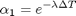
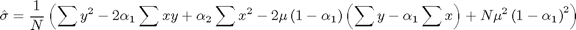

Contents
function [ mu, sigma, lambda ] = CalibrateOrnsteinUhlenbeckMaxLikelihood(S, deltat, T)
% Calibrate an OU process by maximum likelihood.
Reference
Based on the algorithm and software described at : http://www.sitmo.com/doc/Calibrating_the_Ornstein-Uhlenbeck_model
n = length(S)-1;
Sx = sum( S(1:end-1) );
Sy = sum( S(2:end) );
Sxx = sum( S(1:end-1).^2 );
Sxy = sum( S(1:end-1).*S(2:end) );
Syy = sum( S(2:end).^2 );
mu = (Sy*Sxx - Sx*Sxy) / ( n*(Sxx - Sxy) - (Sx^2 - Sx*Sy) );
lambda = -(1/deltat)*log((Sxy - mu*Sx - mu*Sy + n*mu^2) / (Sxx -2*mu*Sx + n*mu^2));

alpha = exp(- lambda*deltat);
alpha2 = exp(-2*lambda*deltat);

sigmahat2 = (1/n)*(Syy - 2*alpha*Sxy + alpha2*Sxx - ...
2*mu*(1-alpha)*(Sy - alpha*Sx) + n*mu^2*(1-alpha)^2);
sigma = sqrt(sigmahat2*2*lambda/(1-alpha2));
end